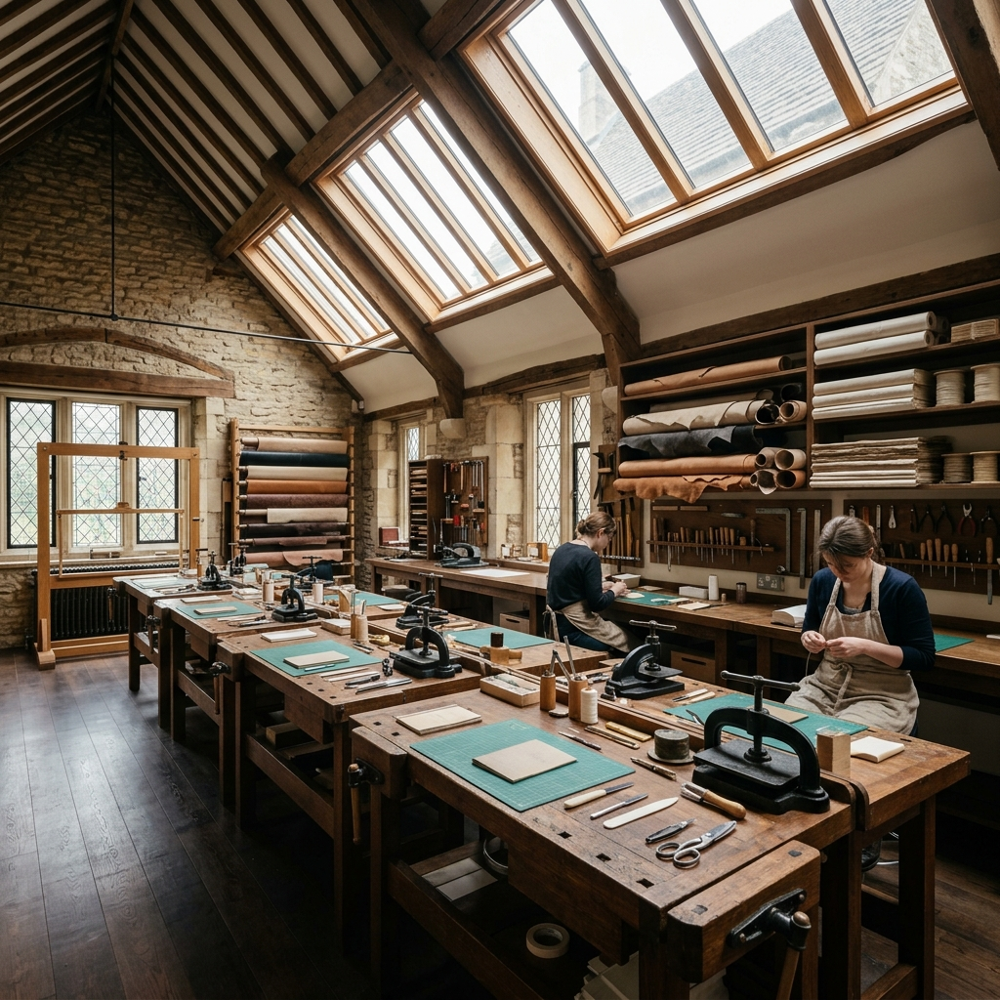
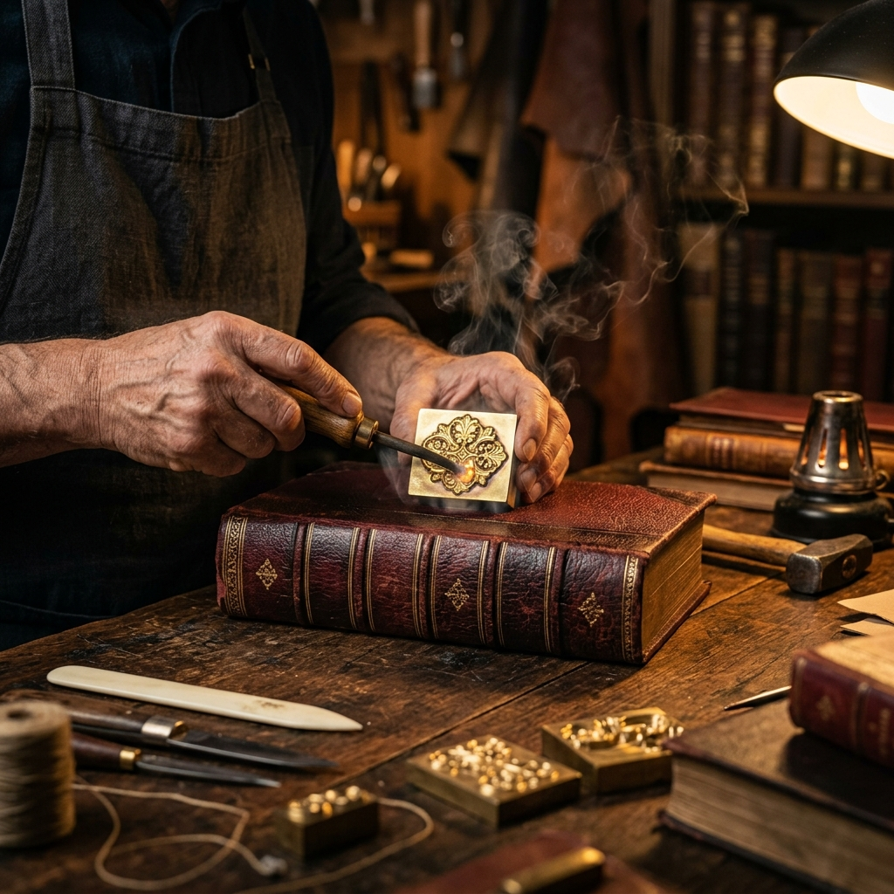

Ergonomic Workstation Topography
Every candidate operates within a dedicated 4-meter working zone equipped with precise tool geometry. Click absolute blueprint target nodes overlaying our workbench surface below to render isolated structural metadata parameters.

Multi-Axis Kinetic Mechanics
Executing flawless deep-relief blind debossing or 24K leaf adhesion demands exact force calibration. Scrub through our localized striking timelines below to evaluate physical impression vectors.
Intaglio Brass Die Impression
Master binders position solid heated brass dies carrying classical typographic arrays directly against deep oxblood calfskin. Optimal molecular bond execution occurs at exactly 400 degrees Fahrenheit under rapid 3-second.

Master-Apprentice Allocations
We reject massive seminar structures. True structural comprehension requires intense personalized bench guidance. Toggle track configuration models below to verify absolute studio occupancy indices.
Solo Scholar Residency
One dedicated candidate working parallel with a primary master binder and support technician. Complete access to all pneumatic intaglio presses without sequence limits.
Duo Guild Apprenticeship
Configured strictly for professional book restoration partners or creative typographic design duos. Shared macro tooling modules coupled with two absolute independent working benches.
4-Bench Studio Delegation
Limited exclusively to pre-cleared institutional groups or elite rare book investment funds seeking standardized physical handling parameters. Guaranteed maximum cap of four total bays.
Substrate Chemistry Laboratory
Authentic historical recreation requires analyzing chemical deterioration over centuries. We subject raw laboratory elements to automated stress arrays. Review dynamic batch scores below.
Florentine Marbled Endpapers
Testing flexural folding endurance across natural unbleached cotton rag fibers loaded with alkali mineral coatings.
96% RESILIENCEDouble-Boiled Oxtail Glue
Evaluating continuous fungal immune resistance and internal humidity plasticizer leaching profiles over multi-year bounds.
89% RESILIENCEUncorrected Bridle Hide
Monitoring ultraviolet ray absorption spectrum decay and real-time cross-sectional tensile elasticity indices.
98% RESILIENCESeasonal Atelier Lab Schedule
Our laboratory allocations close automatically once internal material cutting limits are logged. Review live upcoming lab cycles verified for advanced scholarly participation.
Kinetic Tooling & Thermal Gilt Practicum
Focuses directly on solid brass intaglio block settings and continuous thread tension mapping.
Archival Substrate Chemistry & Leaf Intercept
Macro laboratory cross-sectioning examining long-term flexural fatigue on double-waxed core sets.
Dynastic Coptic Suture & Exposed Spine Protocol
Advanced external braiding loops executed strictly across naked unbleached oxblood base bindings.
Private Consular Fellowships
We coordinate deeply customized physical residency tracks for global historical trust foundations, high-end fine art restoration houses, and academic bibliophile curators. Custom fellows receive access keys to unlisted antique finishing presses.

Live Workbench Transmission Feed
Configure your specific lab background profile attributes below to generate an instantaneous cryptographic staging ticket required for passing our physical security threshold.